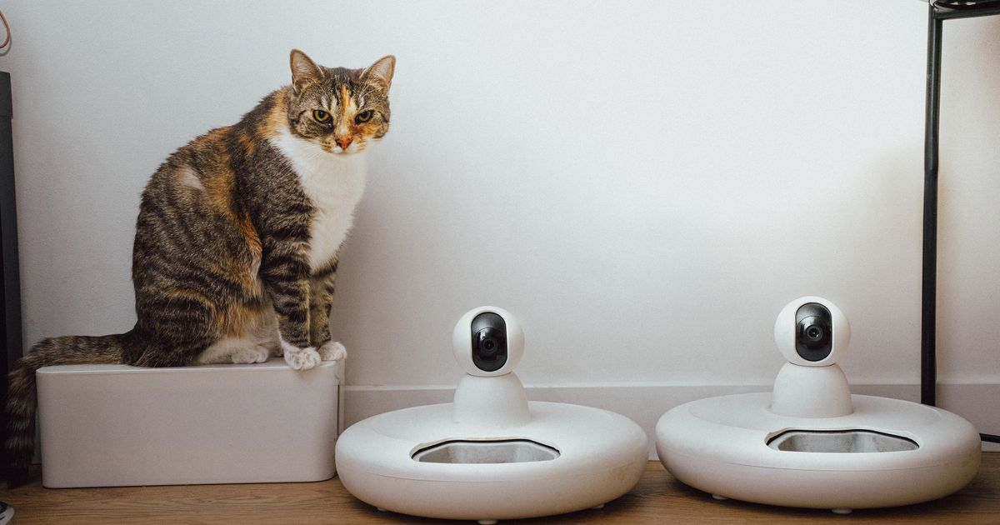

O Newpet 4L vale a pena para tutores que querem um comedouro automático de capacidade grande (4 litros) e gravação de voz, sem precisar de Wi-Fi ou app — mas não é a escolha certa para quem quer monitorar ou ajustar a alimentação remotamente pelo celular.
Key Takeaways
- Capacidade de 4 litros, indicado para cães de porte médio a grande ou casas com mais de um pet.
- Gravação de voz de até 12 segundos para chamar o pet na hora da refeição.
- Funciona com adaptador de energia ou 3 pilhas tipo D — mantém a programação mesmo em queda de energia.
- Não possui Wi-Fi/app: toda a programação é feita nos botões do próprio aparelho.
- Um dos modelos com selo "Mais Vendido" na categoria no Mercado Livre (Mercado Livre — busca "Newpet 4L", retrieved 2026-08-20).
8,3/10 — Ótimo custo-benefício para quem não precisa de app
Resumo em uma linha: Entrega capacidade grande, gravação de voz e estabilidade de funcionamento sem cobrar pelo custo extra de conectividade.
Ideal para: Cães de porte médio a grande, casas com mais de um pet, e tutores com rotina previsível que não precisam ajustar horários pelo celular.
Não ideal para: Quem viaja com frequência e quer monitorar ou reprogramar a alimentação remotamente, ou quem valoriza câmera integrada.
Onde comprar: Mercado Livre, com preço e frete variáveis por vendedor.
comparativo de comedouros automáticos mais vendidos para cachorro
O Newpet 4L permite programar as refeições diretamente no painel do aparelho, sem necessidade de aplicativo. O reservatório de 4 litros reduz a frequência de reabastecimento, e o sistema antiderrapante mantém o equipamento estável mesmo com pets mais agitados na hora da comida.
A gravação de voz personalizada — até 12 segundos — é um dos recursos mais citados por quem já usa o produto, principalmente para cães que reconhecem a voz do tutor como sinal de refeição (PetTechBrasil, retrieved 2026-08-20).
Sem aplicativo, toda a configuração é feita nos botões físicos do aparelho: horário das refeições, quantidade de porções por refeição e gravação da mensagem de voz. É um processo mais manual do que em modelos com Wi-Fi, mas também mais imune a problemas de conexão, queda de rede doméstica ou bugs de aplicativo, que são reclamações comuns em comedouros conectados. Para quem já testou um comedouro Wi-Fi e teve frustração com sincronização ou app instável, a simplicidade do painel físico pode ser justamente o diferencial que resolve o problema.
A capacidade de 4 litros e o formato do reservatório fazem do Newpet 4L uma opção prática para quem tem dois cães de porte médio ou um cão maior com apetite elevado, já que reduz a frequência de reabastecimento em comparação a modelos de 1,5 a 2 litros. Vale reforçar que o aparelho libera a porção programada em um único ponto de saída, então em casas com mais de um pet, o ideal é supervisionar as primeiras refeições para garantir que não haja disputa por comida ou que um animal coma a porção do outro.
| Especificação | Newpet 4L |
|---|---|
| Capacidade | 4 litros |
| Conectividade | Nenhuma (timer no painel) |
| Gravação de voz | Sim, até 12 segundos |
| Alimentação | Tomada ou 3 pilhas tipo D (backup) |
| Indicado para | Cães de porte médio/grande, multi-pet |
| Onde encontrar | Mercado Livre — busca "Newpet 4L" |
Independentemente do modelo, vale verificar se o comedouro tem trava na tampa e sistema anti-obstrução, que interrompe a liberação de ração caso detecte algo bloqueando o mecanismo — um recurso de segurança cada vez mais comum mesmo em modelos de entrada como o Newpet 4L (Amor de Cachorro, retrieved 2026-08-20).
É a escolha mais equilibrada para quem tem uma rotina previsível (não precisa ajustar horários remotamente) e quer um comedouro de maior capacidade sem pagar pelo custo extra de conectividade. Para quem viaja com frequência ou quer acompanhar a alimentação à distância, o modelo com Wi-Fi é mais indicado.
review do comedouro VDRBG 4L Wi-Fi
Comparando o Newpet 4L com modelos Wi-Fi de capacidade equivalente (como o VDRBG 4L), a diferença de preço costuma corresponder quase inteiramente ao custo do módulo de conectividade — a capacidade, a gravação de voz e o sistema antiderrapante são recursos praticamente equivalentes entre as duas faixas. Isso sugere que pagar mais só compensa se o controle remoto for algo que você realmente vai usar no dia a dia, não apenas "bom ter".
Se a rotina exige reprogramar horários com frequência, viajar por vários dias sem acesso ao aparelho, ou acompanhar por câmera se o pet está comendo, o VDRBG 4L Wi-Fi resolve isso de forma mais direta. Já para uma rotina de trabalho previsível, com horários fixos de saída e retorno, o Newpet 4L faz exatamente o mesmo trabalho de alimentar o pet no horário certo, com menos pontos de falha e sem depender da qualidade do sinal Wi-Fi em casa.
Vale uma distinção importante para quem está comparando comedouros automáticos de propostas diferentes. O Newpet 4L é feito para ração seca em grande volume, sem sistema de refrigeração, então não é indicado para quem alimenta o pet com sachês ou ração úmida. Para esse caso específico, o Cat Mate C500 resolve o problema com um sistema de bolsas de gelo reutilizáveis que mantém a ração úmida em condição segura por cerca de 8 a 12 horas. Se a dieta do seu pet é só ração seca, o Newpet 4L tende a ser a opção mais simples e econômica; se envolve ração úmida, o C500 é a escolha mais adequada.
Por não ter sistema de refrigeração, o Newpet 4L exige menos manutenção do que comedouros voltados para ração úmida, mas ainda assim vale seguir alguns cuidados básicos: limpar o reservatório e o compartimento de saída periodicamente para evitar acúmulo de poeira da própria ração, verificar se o mecanismo giratório libera a quantidade programada de forma consistente, e trocar as pilhas de backup a cada poucos meses mesmo que o aparelho fique ligado na tomada na maior parte do tempo. Um comedouro travado ou com falha de energia sem backup pode significar um pet sem comida em um período crítico, então o backup de pilhas é uma camada de segurança que vale a pena manter sempre ativa.
Esta análise foi construída a partir da ficha técnica e das fotos divulgadas em anúncios ativos do produto no Mercado Livre, cruzadas com reviews independentes de terceiros (PetTechBrasil, Amor de Cachorro) e com o histórico de avaliações do produto na própria plataforma de venda. Não se trata de um teste laboratorial conduzido por nós; sempre que possível, indicamos a fonte original de cada informação de desempenho citada no texto. Recomendamos conferir as avaliações mais recentes no anúncio antes de comprar, já que a qualidade de fabricação e a calibração da porção podem variar entre lotes e vendedores. Veja nossa política editorial e de afiliados para entender como selecionamos e avaliamos produtos.
Sim, o aparelho aceita 3 pilhas tipo D como backup, o que mantém a programação ativa mesmo durante uma queda de energia. É recomendável manter pilhas novas instaladas mesmo quando o comedouro está ligado na tomada, como redundância.
Sim, o comedouro é compatível com cães e gatos. Como a capacidade é de 4 litros, ele tende a ser mais interessante para casas com mais de um gato ou para gatos que comem porções maiores, já que para um único gato pequeno a capacidade pode ser maior do que o necessário.
Sim, a programação no painel permite ajustar quantidade e horário das refeições. Como em qualquer comedouro mecânico, vale conferir a quantidade real liberada nos primeiros dias e recalibrar se necessário, já que pode haver pequena variação entre unidades.
O Newpet 4L entrega o essencial — capacidade, praticidade e um recurso diferencial (voz) — sem o custo e a complexidade de um app. Vale a pena para quem quer simplicidade e tem rotina previsível. Se a programação remota é indispensável, o VDRBG 4L Wi-Fi é o caminho mais direto; se a dieta do pet inclui ração úmida, o Cat Mate C500 é a opção mais adequada.
guia completo de comedouro automático para pet
Ainda em dúvida se compensa migrar para um sistema automático? Veja nossa análise sobre se um comedouro automático vale a pena para o seu caso.
Escrito pela Equipe Smart Pet Gadgets. Especificações conferidas em anúncios ativos do Mercado Livre em 2026-08-20; veja nossa política editorial.
🐾 Confira o preço e a disponibilidade atual no Mercado Livre.
Ver no Mercado Livre →Link de afiliado: podemos receber uma comissão por compras feitas através deste link, sem custo adicional para você.
Nildo Alves — curadoria de produtos pet no Smart Pet Gadgets. Testa e pesquisa produtos para cães e gatos, cruzando especificações de fabricante com boas práticas veterinárias e dados de mercado.
Sobre o Smart Pet Gadgets · Contato · Política editorial e de afiliados